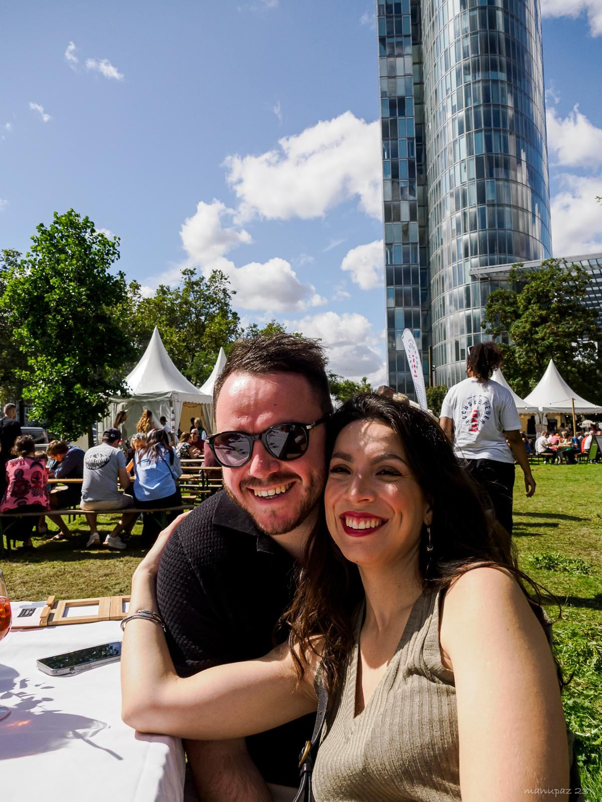
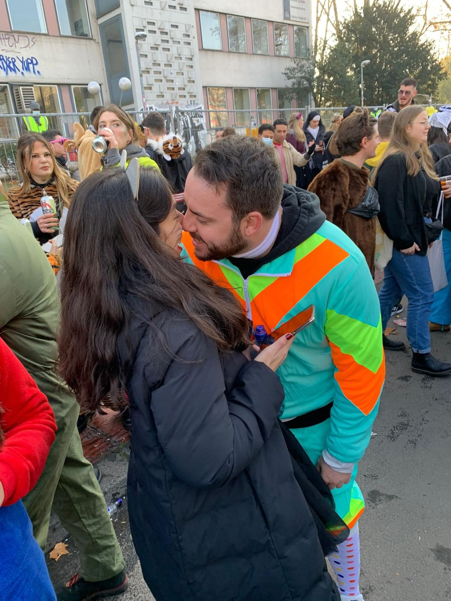
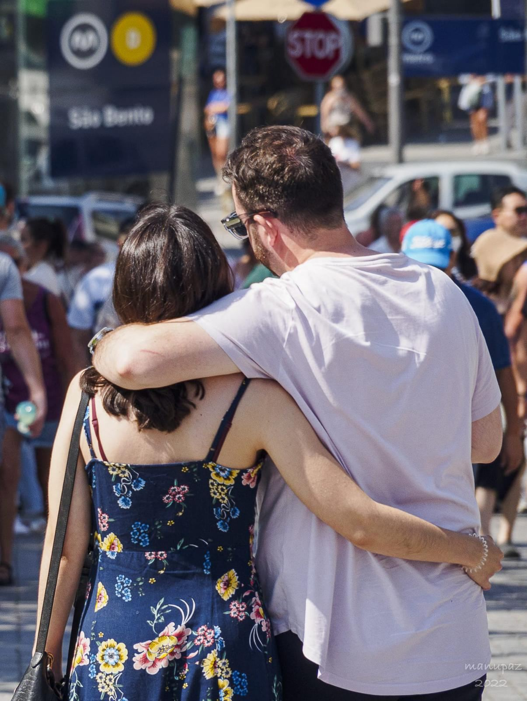
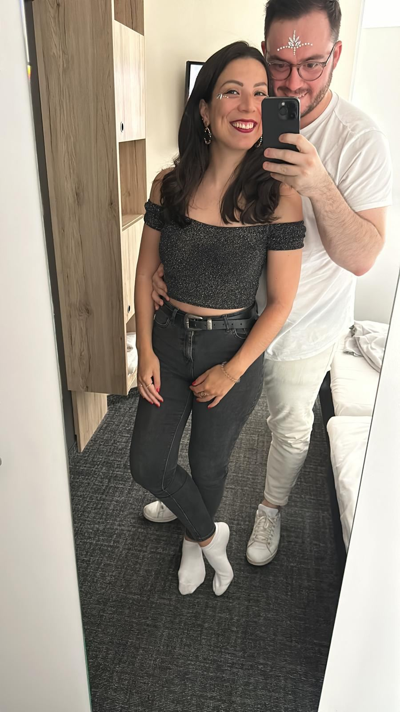
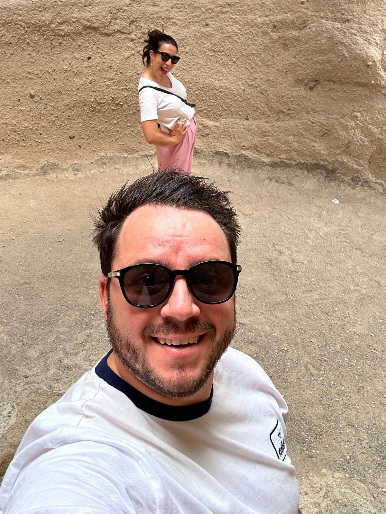
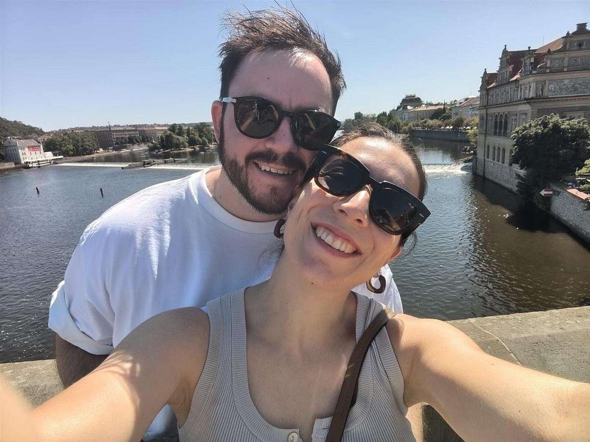

Marta & Flo
–
–
–
–





12:00
13:00
13:30
14:00
18:00
00:00
A Coruña (LCG)
Santiago de Compostela (SCQ)
(OPO)
Asturias (OVD)
DE64 3101 0833 9912 5972 91
BIC: SCFBDE33XXX
Pulpo á feira
Tarta de Santiago